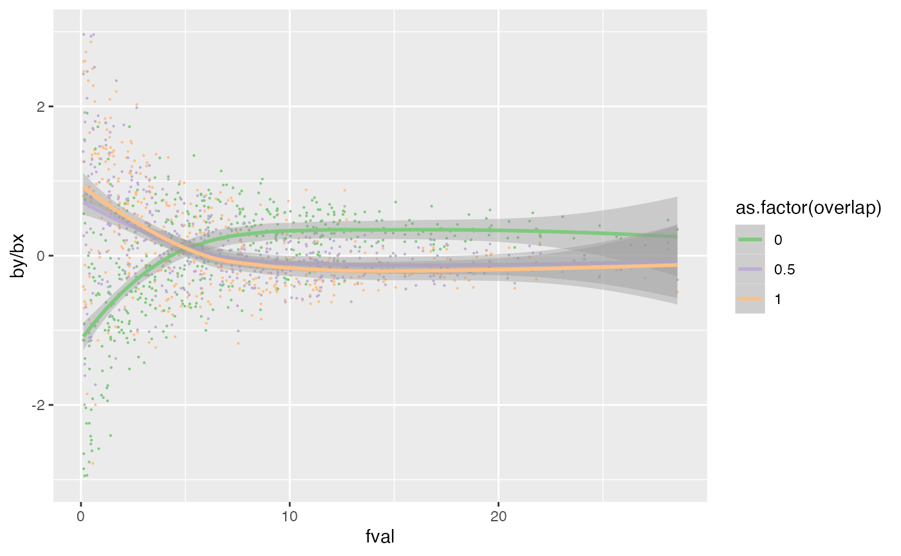

library(simulateGP) library(MASS) library(tidyverse) #> ── Attaching packages ─────────────────────────────────────── tidyverse 1.3.0 ── #> ✔ ggplot2 3.3.3 ✔ purrr 0.3.4 #> ✔ tibble 3.1.0 ✔ dplyr 1.0.5 #> ✔ tidyr 1.1.2 ✔ stringr 1.4.0 #> ✔ readr 1.4.0 ✔ forcats 0.5.0 #> ── Conflicts ────────────────────────────────────────── tidyverse_conflicts() ── #> ✖ dplyr::filter() masks stats::filter() #> ✖ dplyr::lag() masks stats::lag() #> ✖ dplyr::select() masks MASS::select() library(ggplot2)
Sample overlap
\[ \begin{bmatrix} \hat{\beta}_1\\ \hat{\beta}_2 \end{bmatrix} = MVN\left ( \begin{bmatrix} \beta_1\\ \beta_2 \end{bmatrix}, \boldsymbol{S} \right ) \]
$$ =
\begin{bmatrix} N_1 & {1,2}\ {1,2} & N_2 \end{bmatrix}
$$
betas <- function(b1, b2, se1, se2, n1, n2, pcor, n_overlap, Nrep=1) { mu <- c(b1,b2) # se1 and se2 are computed as per your formula ses <- matrix(c(se1,0, 0, se2), 2, 2) # pcor is the phenotypic correlation between traits, N_0 is the sample overlap, N1 is sample size 1, N2 is sample size 2 r <- pcor * n_overlap / sqrt(n1*n2) cor = matrix(c(1,r, r, 1), 2, 2) cov <- ses %*% cor %*% ses sample <- mvrnorm(Nrep, mu, cov) sample } maf <- 0.4 vy <- 1 n1 <- 10000 n2 <- 10000 b1 <- 0.1 bxy <- 0 b2 <- b1 * bxy se1 <- expected_se(b1, maf, n1, 1) (b1 / se1)^2 #> [1] 48.23151 se2 <- expected_se(b2, maf, n2, 1) betas(b1, b2, se1, se2, 1000, 1000, 0.5, n_overlap=1000, 10000) %>% colMeans %>% {.[2]/.[1]} #> [1] 0.002279094 betas(b1, b2, se1, se2, 1000, 1000, 0.5, n_overlap=0, 10000) %>% colMeans %>% {.[2]/.[1]} #> [1] 0.0004251417 betas(b1, b2, se1, se2, 1000, 1000, 0.5, n_overlap=1000, 10000) %>% cor #> [,1] [,2] #> [1,] 1.0000000 0.4909255 #> [2,] 0.4909255 1.0000000 betas(b1, b2, se1, se2, 1000, 1000, 0.5, n_overlap=0, 10000) %>% cor #> [,1] [,2] #> [1,] 1.00000000 0.02215603 #> [2,] 0.02215603 1.00000000 # rsq = F / (F + n -1) # rsq F + rsq(n-1) = F # rsq F - F = -rsq(n-1) # F (rsq - 1) = - rsq(n - 1) # F = (rsq - rsq n) / rsq - 1 # rsq = 20 / (20 + 1000 - 1) nrep=2000 nsnp=100 n1 <- 1000 n2 <- 1000 maf <- 0.4 pcor <- 0.6 a <- generate_gwas_params(tibble(snp=1:nsnp, af=maf), 1, S=5) a <- expand.grid(b1=a$beta, overlap=c(0, 0.5, 1), bxy=c(0, 0.3)) %>% as_tibble a$se1 <- expected_se(a$b1, maf, n1, 1) a$fval <- (a$b1/a$se1)^2 hist(a$fval)

a$b2 <- a$b1 * a$bxy a$se2 <- expected_se(a$b2, maf, n2, 1) l <- list() for(i in 1:nrow(a)) { r <- betas(a$b1[i], a$b2[i], a$se1[i], a$se2[i], n1, n2, pcor, a$overlap[i] * n1, nrep) d <- a[i,] %>% slice(rep(row_number(), nrep)) d$bx <- r[,1] d$by <- r[,2] l[[i]] <- d } dat <- bind_rows(l) dat$wr <- dat$by/dat$bx ggplot(subset(dat, wr < 3 & wr > -3), aes(x=fval, y=by/bx)) + # geom_point(size=0.1, aes(colour=as.factor(overlap))) + geom_smooth(aes(colour=as.factor(overlap))) + facet_grid(. ~ bxy) + scale_colour_brewer(type="qual") #> `geom_smooth()` using method = 'gam' and formula 'y ~ s(x, bs = "cs")'

nsim <- 500 dat1 <- tibble(rsq1=runif(nsim, 0.001, 0.01), overlap=1) dat2 <- tibble(rsq1=dat1$rsq1, overlap=0) dat3 <- tibble(rsq1=dat1$rsq1, overlap=0.5) n1 <- 1000 n2 <- 1000 g1 <- make_geno(n1, 1, 0.4) g2 <- make_geno(n2, 1, 0.4) u1 <- rnorm(n1) u2 <- rnorm(n2) mid <- round(n2/2) for(i in 1:nrow(dat1)) { b <- choose_effects(1, dat1$rsq1[i]) x1 <- make_phen(c(b, sqrt(0.5)), cbind(g1, u1)) x2 <- make_phen(c(b, sqrt(0.5)), cbind(g2, u2)) y1 <- make_phen(c(0.1, -sqrt(0.5)), cbind(x1, u1)) y2 <- make_phen(c(0.1, -sqrt(0.5)), cbind(x2, u2)) e1 <- get_effs(x1, y1, g1) ex1 <- fast_assoc(x1, g1) ey1 <- fast_assoc(y1, g1) ey2 <- fast_assoc(y2, g2) ey3 <- fast_assoc(c(y1[1:mid], y2[(mid+1):n2]), c(g1[1:mid], g2[(mid+1):n2])) dat1$fval[i] <- ex1$fval dat2$fval[i] <- ex1$fval dat3$fval[i] <- ex1$fval dat1$bx[i] <- ex1$bhat dat1$by[i] <- ey1$bhat dat2$bx[i] <- ex1$bhat dat2$by[i] <- ey2$bhat dat3$bx[i] <- ex1$bhat dat3$by[i] <- ey3$bhat } #> Warning: Unknown or uninitialised column: `fval`. #> Warning: Unknown or uninitialised column: `fval`. #> Warning: Unknown or uninitialised column: `fval`. #> Warning: Unknown or uninitialised column: `bx`. #> Warning: Unknown or uninitialised column: `by`. #> Warning: Unknown or uninitialised column: `bx`. #> Warning: Unknown or uninitialised column: `by`. #> Warning: Unknown or uninitialised column: `bx`. #> Warning: Unknown or uninitialised column: `by`. dat <- bind_rows(dat1, dat2, dat3) ggplot(dat, aes(x=fval, y=by/bx)) + geom_point(size=0.1, aes(colour=as.factor(overlap))) + geom_smooth(aes(colour=as.factor(overlap))) + xlim(c(0.1, max(dat$fval))) + ylim(c(-3, 3)) + scale_colour_brewer(type="qual") #> `geom_smooth()` using method = 'loess' and formula 'y ~ x' #> Warning: Removed 35 rows containing non-finite values (stat_smooth). #> Warning: Removed 35 rows containing missing values (geom_point).
